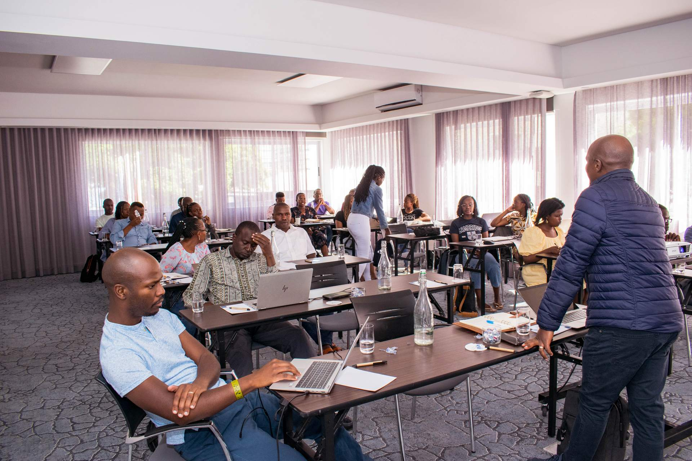
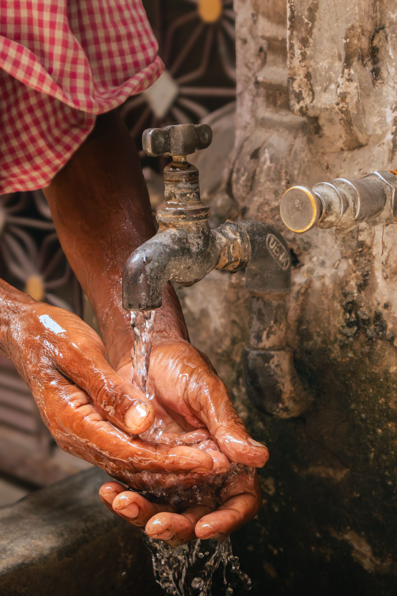
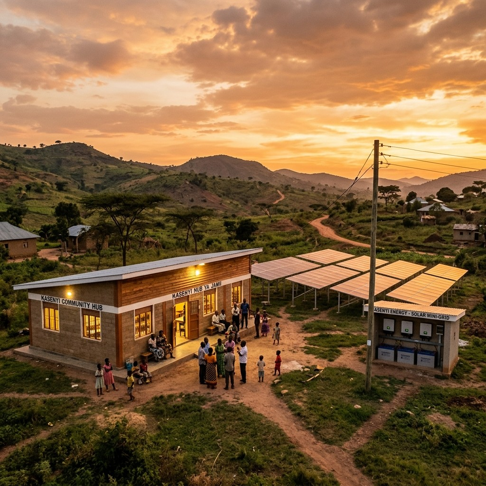
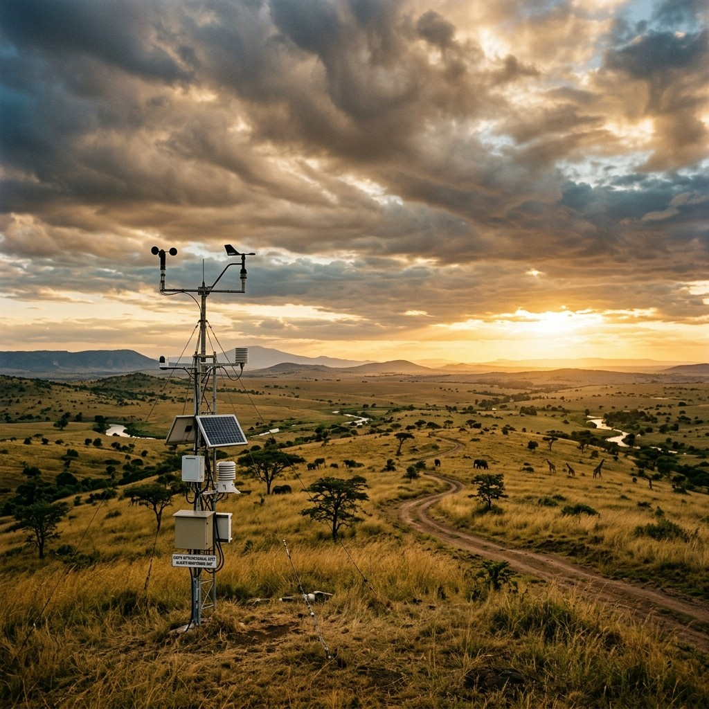
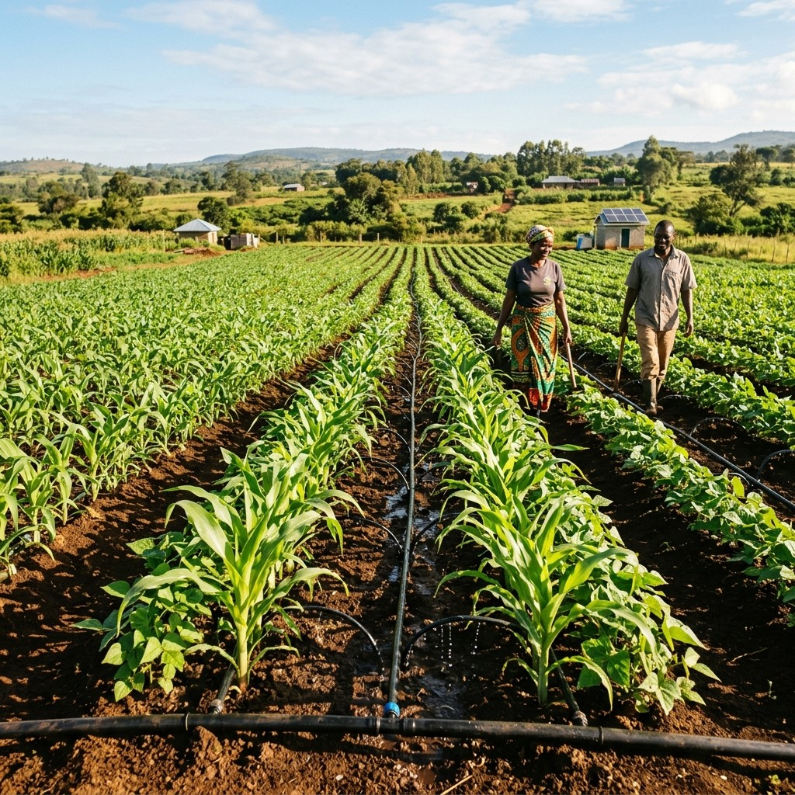

Bridging Science and Sustainability.
The EED Research Institute is dedicated to pioneering ecological breakthroughs that inform policy and empower communities across the globe.
Fieldwork across East and Sub-Saharan Africa
Applied research grounded in the communities and institutions our findings are meant to serve.
Four pillars, one interconnected mission
Our core thematic areas bring together empirical research, institutional analysis, and localized action.

WASH 961M Access GainedWater & Sanitation
01According to the 2026 UN SDG 6 Synthesis Report, over 961 million people gained access to safely managed drinking water over the past decade. Our WASH research focuses on water security, sanitation governance, and building resilient water systems.
Explore Pillar →
Energy +19.5% EfficiencyClean Energy
02Targeting universal energy access (SDG 7), addressing the 900 million gap in clean cooking access across Africa, and driving water-energy nexus efficiency gains across industrial and rural mini-grid systems.
Explore Pillar →
Climate 18% Water StressClimate Resilience
03Tracking climate variability impacts across vulnerable landscapes, evaluating transboundary water management (59% coverage), and advancing localized climate adaptation and climate finance mechanisms.
Explore Pillar →
Agriculture 6% Irrigated FarmlandAgriculture & Food
04Empowering sub-Saharan Africa's 33 million smallholders where 60% of the population relies on agriculture. We focus on micro-irrigation, water quality monitoring, and sustainable food value chains.
Explore Pillar →How we work
Four organizational competencies cut across every thematic area, from the evidence base through to implementation.
Integrated Systems Modeling & Data Analytics
We apply advanced geospatial mapping, AI-driven predictive models, and integrated resource nexus frameworks (Water-Energy-Food-Climate) to underpin every sector. We generate the granular, open-source evidence base required for scenario-testing, trade-off analysis, and strategic planning.
Policy Architecture & Institutional Capacity
We translate technical evidence into actionable, enforceable frameworks. Our approach co-designs regulatory roadmaps, tariff structures, accountability mechanisms, and inter-ministerial coordination protocols across all sectors.
Blended Finance & Market Systems
We bridge the gap between public mandates and private capital by structuring blended-finance vehicles, results-based financing (RBF), carbon/water credit mechanisms, and risk-mitigation instruments (guarantees, insurance).
Human-Centered Design & Adaptive Management
We place end-users, vulnerable groups, and local communities at the core of every intervention. Using participatory co-creation, behavioral diagnostics, and gender-disaggregated data, we design solutions that are culturally appropriate and socially inclusive.
Institute Milestones
Founded
EED Research Institute is established with a mandate to advance evidence-based research across WASH, energy, climate, and agriculture.
First facility grants
First Kawisafi Technical Assistance Facility (TAF) grants disbursed; 150+ ongoing research initiatives launched across the region.
Active in 47 countries
Four key thematic pillars anchor our work across WASH, energy, climate and agriculture, supported by a growing multidisciplinary team of researchers, scientists, and strategists.
Become a Partner
We collaborate with organizations, institutions, and changemakers to accelerate sustainable solutions through research, innovation, and shared action. Join us in shaping a more sustainable future.